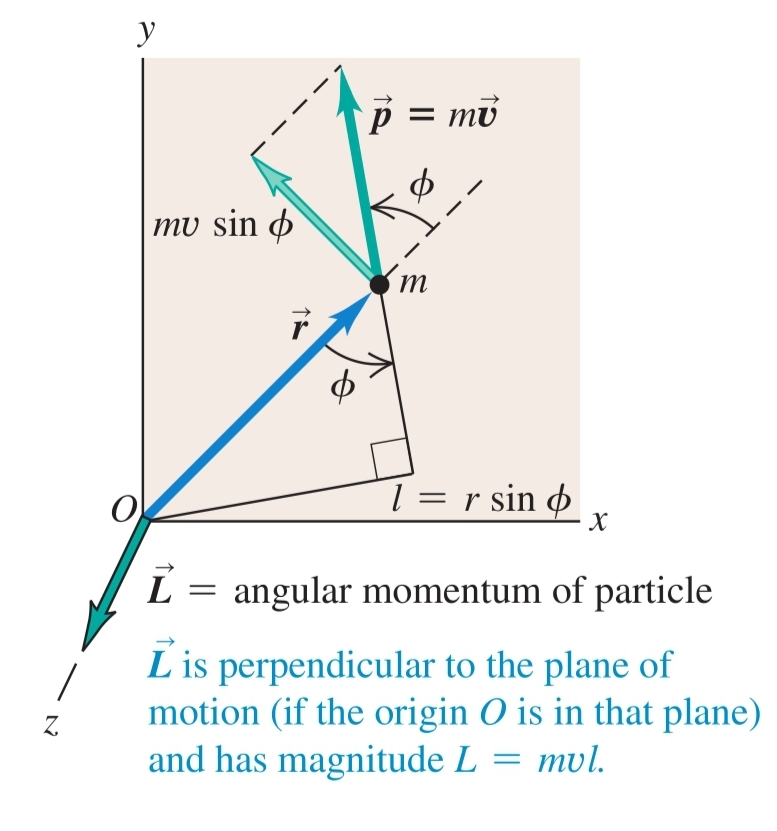
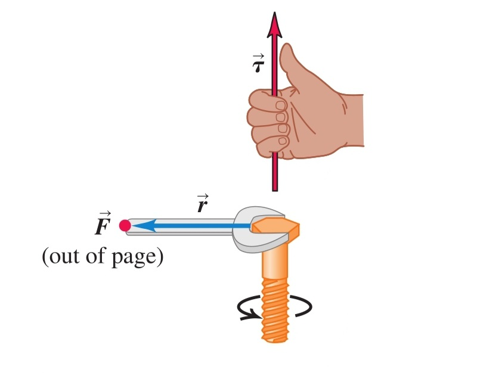
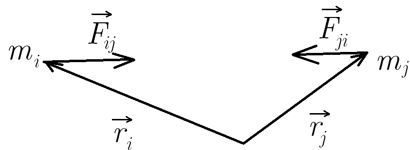

-
Момент на импулса ($\vec{L}, [\frac{\text{kg}\cdot\text{m²}}{\text{s}}]$) - физична величина, характеризираща количеството въртеливо движение
а) на материална точка
$$\vec{L} \overset{\text{def}}{=} \vec{r}\times \vec{p}$$

- посока - определя се по правилото на дясната ръка
- големина: $L = mvr\sin\phi$
-
Въртящ момент / момент на сила ($\vec{\tau}, [\text{N}\cdot \text{m}]$) - величина, характеризираща въртеливото движение, което дадена сила придава на тялото, върху което въздейства
$$\vec{\tau} \overset{\text{def}}{=} \vec{r}\times \vec{F}$$

а) рамо на силата ($l$) - разстоянието между оста на въртене и правата, по която действа силата
б) големина
$$\tau = Fl$$
- сила, която действа така, че да завърти тялото по посока, обратна на часовниковата стрелка, има положителен въртящ момент
- сила, която действа така, че да завърти тялото по посока на часовниковата стрелка, има отрицателен въртящ момент
в) посока - палецът на дясната ръка сочи по посока на вектора на въртящия момент, когато останалите пръсти се насочат по посока на $\vec{r}$ и се свият в посока на силата

г) ефект върху момента на импулса - въртящият момент е промяната в момента на импулса
$$\frac{d\vec{L}}{dt} = \vec{\tau}$$ Доказателство: $$\frac{d\vec L}{dt} = \frac{d (m\vec r \times \vec v)}{dt} = m \frac{d\vec r}{dt} \times \vec v + m \vec r \times \frac{d \vec v}{dt} = m \vec v \times \vec v + m \vec r \times \vec a = \vec r \times m\vec a$$
-
Закон за запазване на момента на импулса - моментът на импулса в затворени системи остава постоянен във времето
Доказателство:
Промяната на момента на импулса на едно тяло е сбора от въртящите моменти, които му действат: $$\frac{d \vec L_1}{dt} = \vec r_1 \times \vec F_{21} + … \vec r_1 \times \vec F_{n1} $$ $$\frac{d \vec L_2}{dt} = \vec r_2 \times \vec F_{12} + … \vec r_2 \times \vec F_{n1} $$ $$\frac{d \vec L_n}{dt} = \vec r_n \times \vec F_{1n} + \vec r_n \times \vec F_{2n} + …$$ Като съберем всички уравнения, ще имаме двойки въртящи моменти от вида  $$\vec r_i \times \vec F_{ji} + \vec r_j \times \vec F_{ij} = \vec r_i \times \vec F_{ji} - \vec r_j \times \vec F_{ji} = (\vec r_i - \vec r_j) \times \vec F_{ji} = \vec 0,$$ тъй като $\vec F_{ji}$ е колинеарна с $\vec r_i - \vec r_j$. Като съкратим всички двойки въртящи моменти, $$\frac{d\vec{L}}{dt}= \vec0$$
а) при отворени системи - производната на момента на импулса е равна на сбора от всички външни въртящи моменти
$$\frac{d\vec{L}}{dt}= \sum \vec{\tau}_{ext}$$